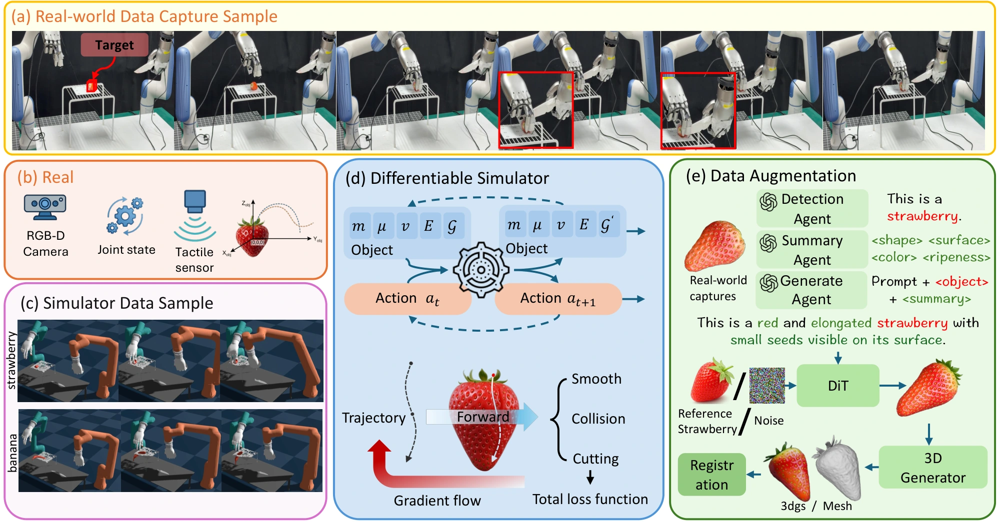
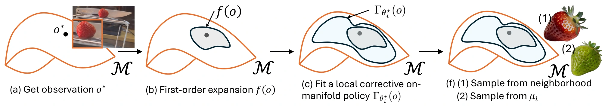
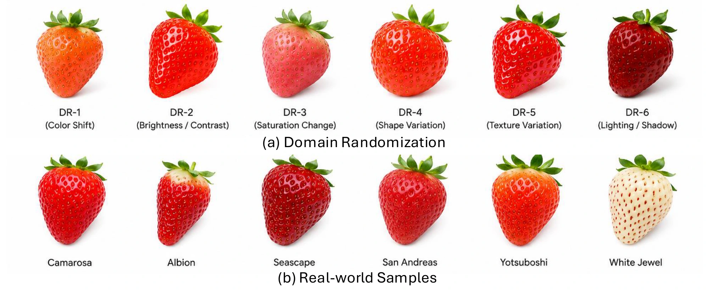
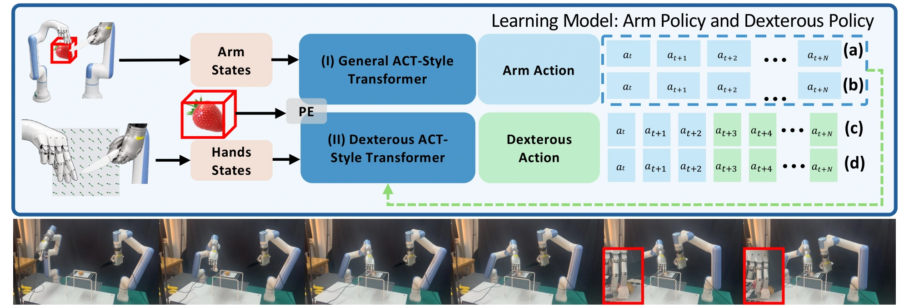
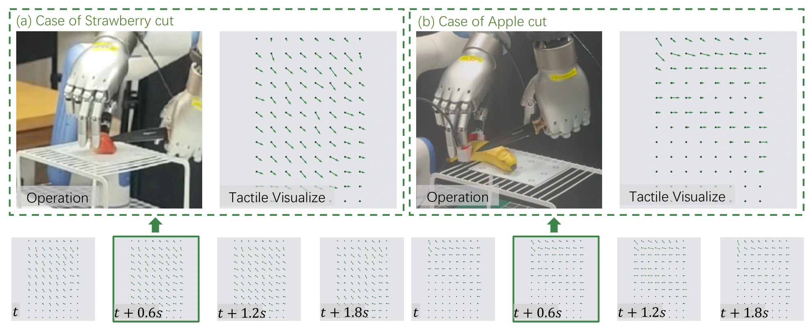
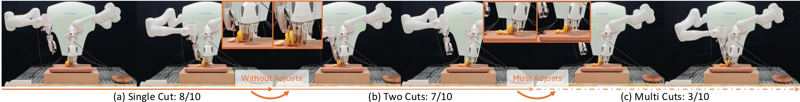

Capture & reconstruct
Record synchronized vision, touch, and robot state. Reconstruct the food at metric scale and register the object and knife in a shared coordinate frame.
Conference on Robot Learning · 2026
* Equal contribution
Cutting a piece of food looks effortless in human hands. For a robot, every cut is a contact-rich interaction with a deformable object whose behavior changes with pose, material properties, and cutting stage. Real-world data collection is expensive and destructive, while simulation must bridge gaps in both physics and perception.
We present DexNinja, a real-to-sim-to-real framework that turns a small set of real demonstrations into a dense, physically grounded training distribution. DexNinja reconstructs food instances from real captures, generates category-consistent variations in geometry and appearance, and randomizes physically meaningful parameters. A differentiable cutting simulator produces feasible trajectories and aligned visual, tactile, and proprioceptive observations. An ACT-style policy separates arm and hand control and adapts its action horizon to the manipulation stage.
Across four food categories, combining real demonstrations with simulated data improves real-world cutting success from 31% to 50% in the main experiment. A separate scaling study reaches 63% with 300 simulated episodes. These results demonstrate the value of data densification for generalization to unseen instances within a food category.
The data engine
Keep the demonstration grounded in reality. Expand its neighborhood in simulation.

Record synchronized vision, touch, and robot state. Reconstruct the food at metric scale and register the object and knife in a shared coordinate frame.
Vary geometry, appearance, and material parameters within the food category. Refine cutting trajectories and retain rollouts that pass feasibility and cutting checks.
Train on real and simulated episodes. Separate arm and hand prediction, then use shorter action chunks when tactile feedback matters most.
Successful demonstrations define the starting point for local shape variation and motion correction.

Category and attribute descriptions guide the generation of new food assets. Candidates are checked for semantic and multi-view consistency, metric scale, valid geometry, and stable simulation.
The asset pipeline yields 1,200 accepted assets across strawberry, apple, banana, and potato, from 1,670 proposals. Simulated episodes also pass inverse-kinematics, collision, and cutting-success checks.

Learning to coordinate motion and contact
The arms align the tool. The hands regulate contact as the food deforms.

Nominal chunk lengths in action steps; shorter chunks allow more frequent feedback during cutting.

Tactile observations inform contact-sensitive hand control. In the matched-budget ablation, removing tactile observations reduces food integrity from 60% to 45% and cutting success from 50% to 43%.
Local cutting dynamics and the articulated robot simulator are connected through the knife: its trajectory and contact wrench form the interface between the two simulation layers.
Real-world evaluation
Four food categories. Twenty-five held-out trials per category and training regime.
Main experiment success
Over real-only training
Separate 300-episode scaling study
Success: the cut fully traverses the food, producing separable halves with a safe termination.
Sim + Real improves success by 19 percentage points over Real-only across all four foods.
Main protocol: 5 real demonstrations and 50 simulated sequences per instance. Each regime is evaluated over 100 real-world trials.
| Food | Sim-only | Real-only | Sim + Real |
|---|---|---|---|
| Strawberry | 10 / 6 / 10 | 12 / 8 / 10 | 19 / 12 / 14 |
| Apple | 5 / 4 / 5 | 6 / 4 / 4 | 14 / 8 / 7 |
| Banana | 16 / 12 / 14 | 17 / 12 / 14 | 24 / 18 / 23 |
| Potato | 15 / 12 / 11 | 9 / 7 / 9 | 19 / 12 / 16 |
| Total / 100 | 46 / 34 / 40 | 44 / 31 / 37 | 76 / 50 / 60 |
With the real dataset fixed, success improves as more simulated episodes are added.
Added simulated episodes · 100 real-world trials per setting
Matched-budget component ablations isolate the value of refinement, touch, and asset diversity.
| Variant | Success |
|---|---|
| Full DexNinja | 50% |
| Without quality control | 46% |
| Without physical randomization | 44% |
| Without tactile observations | 43% |
| Without generated assets | 42% |
| Without trajectory refinement | 39% |
Repeated cutting introduces new geometry, new contacts, and accumulated error.

DexNinja handles heterogeneous food and repeated cutting, but performance decreases as manipulation becomes more complex. In the main experiment, grasp/contact control and cutting-physics mismatch account for 19 and 17 of the 50 failed trials, respectively.
Current scope. Policies are category-specific and use a mounted camera. New food categories require new assets and retraining or fine-tuning. The second robot setup provides qualitative evidence of portability across embodiments.